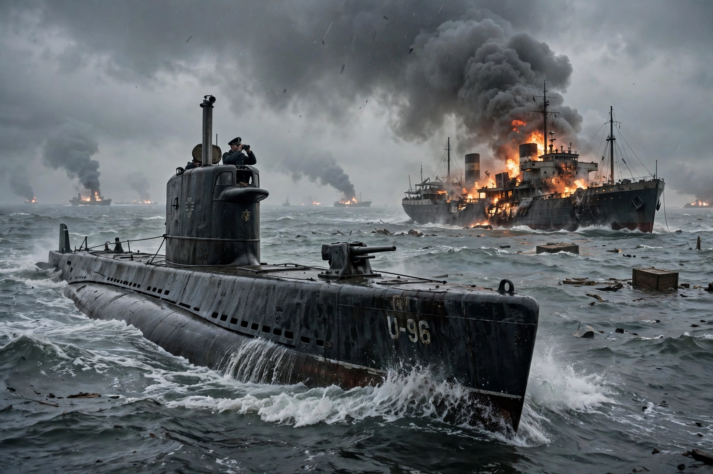

Battle of the Atlantic

The Battle of the Atlantic, the longest continuous military campaign of the Second World War, ran from 1939 to the defeat of Germany in 1945. At its core was the Allied naval blockade of Germany and Germany's counter-blockade of Britain, fought between German U-boats and surface raiders and the Allied convoys carrying food, fuel and matériel across the Atlantic Ocean. Winston Churchill wrote that "the only thing that ever really frightened me during the war was the U-boat peril."
| Date | 3 September 1939 – 8 May 1945 |
|---|---|
| Location | Atlantic Ocean, North Sea, Caribbean and Arctic approaches |
| Result | Allied victory |
| Belligerents | United Kingdom, Canada, United States and allies — Germany, Italy |
| Commanders | Sir Percy Noble; Sir Max Horton; Leonard Murray; Ernest J. King — Erich Raeder; Karl Dönitz |
The U-boat war
German submarines, organised by Karl Dönitz into "wolf pack" tactics coordinated by radio, attacked convoys on the surface at night. Periods of heavy sinkings — the "Happy Time" of 1940–41 off the American coast in early 1942 — alternated with improving Allied defences. By 1942 the mid-Atlantic "air gap," beyond the range of shore-based aircraft, was where convoys suffered most.
Turning point
In "Black May" 1943 the Allies, combining Ultra signals intelligence from Bletchley Park, centimetric radar, high-frequency direction finding ("Huff-Duff"), escort carriers, very-long-range Liberator aircraft and dedicated support groups, sank 41 U-boats and forced Dönitz to withdraw from the North Atlantic convoy routes. Thereafter Allied shipbuilding — above all the mass-produced Liberty ships — outpaced losses decisively.
Losses
Some 3,500 Allied merchant ships and 175 warships were sunk, with over 72,000 Allied seamen killed. Germany lost 783 U-boats and about 28,000 of the 40,000 men who served in them — the highest casualty rate of any arm of any service in the war.